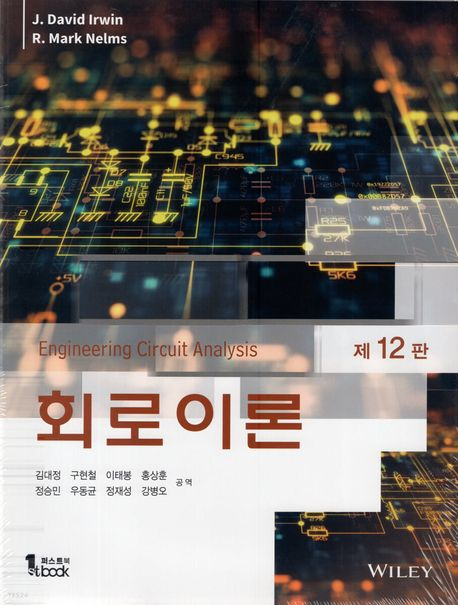

회로이론
전자공학과 김동한 교수님의 회로이론(Circuit Theory) 주차별 강의 자료 보관소

Part 1. 회로 해석의 기초 (Basic Concepts & Laws)
Chapter 1. 기본 개념
전기 회로의 정의, 전하(Charge), 전류(Current), 전압(Voltage), 에너지 및 순시 전력(Power)의 물리적 정의와 단위계.
Chapter 2-1. 옴의 법칙
저항(Resistance)의 정의, 컨덕턴스 및 전압과 전류의 선형 비례 관계를 다룬 옴의 법칙(Ohm's Law)과 수동소자 규약.
Chapter 2-2. 키르히호프 법칙
회로 해석의 근본인 키르히호프 전류 법칙(KCL)과 키르히호프 전압 법칙(KVL)의 물리적 정의 및 마디/루프 분석.
Chapter 2-3. Single Loop
단일 루프로 이루어진 직렬 회로의 전류 계산 및 소자별 분배 전압을 고속으로 계산하는 전압 분배 법칙(Voltage Division).
Chapter 2-4. Single Node Pair
단일 마디 쌍으로 이루어진 병렬 회로의 마디 전압 해석 및 각 지로의 분배 전류를 구하는 전류 분배 법칙(Current Division).
Chapter 2-5~7. 직병렬 & Delta-Wye
저항의 직렬 및 병렬 등가 합성법과 브릿지 회로 간소화를 위한 델타-와이($\Delta\text{-Y}$) 상호 등가 변환식 유도와 분석.
Chapter 2-8. 종속 전원 회로
제어 변수에 따라 전압/전류가 결정되는 종속 전원(Dependent Sources)을 포함한 회로망의 KCL/KVL 확장 분석.
Part 2. 핵심 회로 해석 기법 (Circuit Analysis Techniques)
Chapter 3-1. 마디 해석법 (Node)
독립 마디 전압을 변수로 설정하여 KCL 연립 행렬 방정식을 조립하는 최고 효율의 회로망 체계적 해석 기법.
Chapter 3-2. 망로 해석법 (Loop)
망로 전류(Mesh Current)를 독립 변수로 조립하여 KVL 방정식을 세우는 해석 이론과 슈퍼망로(Supermesh) 해석.
Chapter 3-3~4. 선형성 & 중첩
선형 소자 회로의 비례/가산적 특성을 증명하고, 다중 전원이 섞여 있을 때 각각 전원을 독립 처리하는 중첩의 원리.
Chapter 3-5~6. 테브난 & 노턴
임의의 복잡 선형 일포트 회로를 등가 전압원/전류원과 등가 저항으로 축소하는 핵심 정리 및 최대 부하 전력 전송 정합 조건.
Chapter 3-7~9. 회로망 정리
신호 전송 가역성(Reciprocity), 소자 변경 효과를 등가 전원으로 대체하는 보상(Compensation), 다중 병렬 전원 요약 밀만의 정리.
Part 3. 과도 상태 및 동적 회로 (Storage Elements & Transient Response)
Chapter 5. 커패시터와 인덕터
에너지를 축적하는 리액티브 동적 소자인 커패시터($C$, 전계)와 인덕터($L$, 자계)의 V-I 관계 공식 및 합성 등가값 계산.
Chapter 6-1. 1차 과도 회로 개론
1차 미분방정식 유도를 통한 RC, RL 회로의 고유 응답 및 스텝(Step) 입력 시의 시간 상수($\tau$)와 응답 파형 유도.
Chapter 6-2. 스텝-바이-스텝 펄스
시간 구간 별 스위칭 및 사각 펄스 입력 시 $0^-$와 $0^+$의 에너지 보존 연속 조건을 적용해 수작업으로 과도 응답식을 얻는 기법.
Chapter 6-3. 2차 과도 RLC 회로
2차 상미분방정식을 모델링하고, 감쇄상수($\alpha$)와 고유각진동수($\omega_0$)를 구해 과/부족/임계 제동 상태 파형 공식 해석.
Chapter 6-4. 과도 회로 설계 응용
RLC 소자의 시정수 특성을 조절하여 아날로그 회로 지연 타이머 설계 및 전압 서지 서프레서 회로 설계 분석.
Part 4. 교류 및 전력 (AC Sinusoidal Steady-State)
김동한 교수
경희대학교 전자공학과
- 전자정보대학 609호
- 내선번호: 3831
- donghani@khu.ac.kr
- 상담시간: 매주 수업 후 1시간
교과 주교재
회로이론 12판 (Engineering Circuit Analysis, 12th Edition)
저자: J. David Irwin, R. Mark Nelms

온라인 강의 채널
수업 내용의 복습을 돕기 위해 매 주차 강의 녹화본을 Youtube에 업로드하고 있습니다.